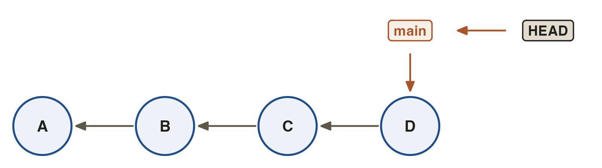
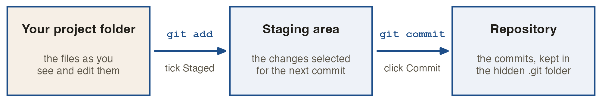
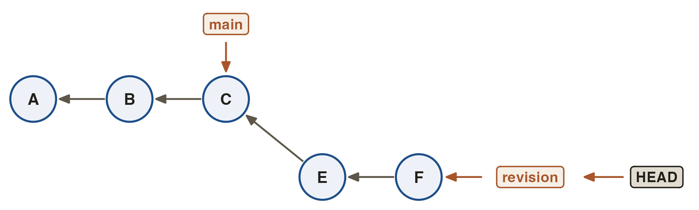
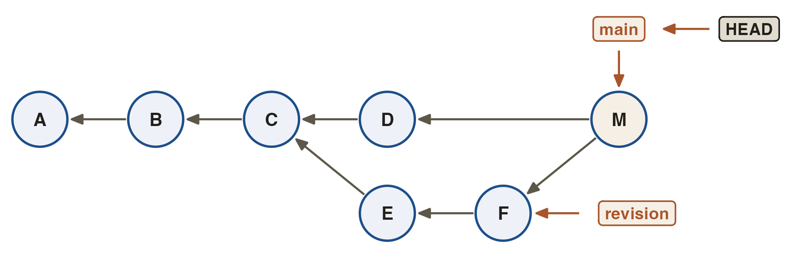
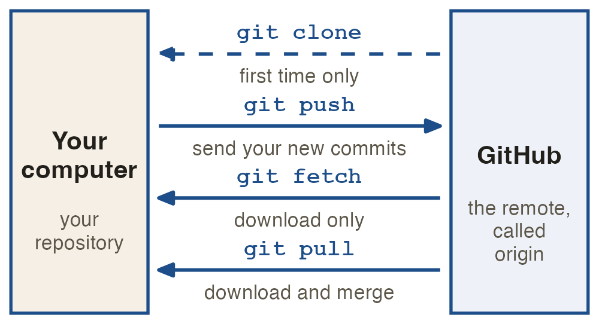
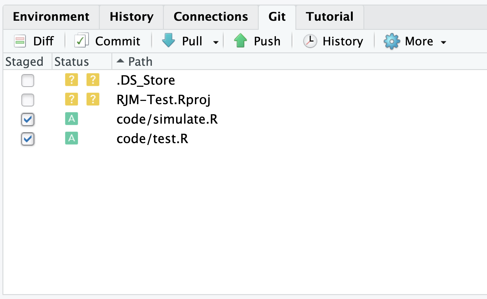

$ git merge units-in-labels
Auto-merging analysis/02-summary.qmd
CONFLICT (content): Merge conflict in analysis/02-summary.qmd
Automatic merge failed; fix conflicts and then commit the result.An AI assistant can run every git command there is, and get each one right. What it cannot do is:
Those four are your job. So today is about:
You will not learn to type git commands from memory.
git config --global pull.rebase prints false). Do it before class; an AI assistant can help.put() writes a file into that repository and git() runs one git command in it; both are small functions written for these slides.You have the files. What is missing is a record of what changed, when, and why.
Version control is a record of a project’s history that answers these. Git is the program that keeps that record, on your computer. GitHub is a website that keeps a copy of it, so others can see and add to it.
Dropbox, Google Drive and OneDrive keep old copies of each file. That is not the same:
Keep a git repository on your computer’s own disk, not inside a synced folder; sync programs and git can each change files the other is using. For a copy elsewhere, use GitHub.
A repository is your project folder plus its full history. Making a folder a repository adds one hidden folder, .git, where git keeps the history. Every other file stays an ordinary file you edit as usual.
.Rproj file.A commit is a stored copy of the whole project at one moment, with a message saying why. The history is the list of commits, each one pointing back to the one before it.

main is the name of the line of commits; HEAD marks the one you are on (more on both under Branch and merge).

add): choosing which of those changes go into the next commit.Why the middle step exists
A morning’s work often holds several unrelated changes: a fix to the cleaning step, a half-finished figure, a line you added to find a bug. Staging lets you commit the fix alone, with its own message, and leave the rest for later. Without it, every commit would be “everything I touched since the last one”.
This is your decision, not the AI’s: it cannot know which changes belong together or why you made them.
When to commit:
Drop fields with zero yield before averaging
NASS writes 0 for counties with no harvested acres. Including them
pulled the average irrigated yield down by 4 bu/ac.Important
A message such as update, fix or changes tells a reader nothing. AI assistants write messages like “Update files” unless told the reason. Give it the reason.
Also your decision. Everything committed is kept for good, and anyone with a copy of the repository has all of it.
| What | Why | |
|---|---|---|
| In | .qmd and .R files, README.md, .gitignore, renv.lock, the .Rproj file |
Written by you, small, text |
| Never | Passwords and API keys (often in a file called .Renviron), data under a data use agreement, data that identifies people |
Permanent once committed, visible to anyone with a copy |
| Usually out | Rendered HTML and its _files folders, data/processed/, results/ |
Your steps rebuild them (06-1) |
| Out | .Rhistory, .RData, .Rproj.user/, .DS_Store |
Files RStudio and macOS write for themselves |
| Depends | data/raw/ |
In if small and you may share it; out if large (GitHub refuses files over 100 MB) or restricted |
A text file at the project root listing what git should ignore. Each line is a file name or a pattern; * stands for any characters, and a name ending in / means a folder.
# files RStudio and macOS write
.Rhistory
.RData
.Rproj.user/
.DS_Store
# secrets
.Renviron
# rendered output, rebuilt by rendering
*.html
*_files/Important
.gitignore only affects files git is not already tracking. A file committed once stays in the history even if you add it to .gitignore later. Write .gitignore before the first commit.
Deleting a password in a later commit does not remove it: the earlier commit still holds it, and anyone who copies the repository gets every commit.
If a key ever reaches GitHub, replace the key (make a new one, cancel the old one) at once. Do not try to erase it from the history.
A branch is a name that points at a commit and moves forward as you commit. Your main line of work is a branch called main. Making a new branch lets you work on a separate line of commits; main stays as it was.

Switching to a branch changes the files in your folder to match that branch. HEAD in the figure means “the branch you are on”.
revision, and main stays exactly what you submitted.main.main.For a project you work on alone, main and well-made commits are enough until one of these comes up.
Merging brings the commits of one branch into another. On main, merge revision, and its commits become part of main.

If the two branches changed different files, or different parts of a file, git combines them without asking. If both changed the same lines, git stops: that is a merge conflict, the next tab.
$ git merge units-in-labels
Auto-merging analysis/02-summary.qmd
CONFLICT (content): Merge conflict in analysis/02-summary.qmd
Automatic merge failed; fix conflicts and then commit the result.Both branches changed the same line of analysis/02-summary.qmd, the label of the y-axis. Git wrote both versions into the file, between marker lines:
Draw yields of irrigated and non-irrigated fields.
```{r}
corn <- readRDS(here::here("data", "processed", "corn_clean.rds"))
ggplot2::ggplot(corn, ggplot2::aes(x = factor(Irrigated), y = Yield)) +
ggplot2::geom_boxplot() +
ggplot2::labs(
title = "Corn yield by irrigation",
x = "Irrigated",
<<<<<<< HEAD
y = "Corn yield"
=======
y = "Yield (bu/ac)"
>>>>>>> units-in-labels
)
```<<<<<<< and =======: the line on the branch you are on (HEAD, here main).======= and >>>>>>>: the line on the branch you are merging in.Which label is right is a question about what your readers need, not about text, so git leaves it to you. The fix: edit the file to the version you want, delete the three marker lines, then stage and commit. An AI can do the editing; the choice is yours.
A remote is a copy of your repository somewhere else, usually on GitHub. By convention it is called origin.

If a pull stops and git says it needs to know how to reconcile divergent branches, the one-time setting git config --global pull.rebase false is missing. It tells git to merge on a pull (the default this lecture assumes), not to rewrite your commits.
When a pull has to merge, git opens a text editor for the merge message. git pull --no-edit accepts git’s standard message instead. Ask an AI agent for --no-edit: it cannot type into an editor, and would wait forever.
A pull request is a proposal, made on GitHub, to merge one branch into another. Its page shows every changed line, and people can comment on single lines before anyone presses Merge.
After a merge on GitHub, main on GitHub has a commit your computer does not. Pull to get it.
Each commit has an identifier, a code git gives it, such as a3f9c21; git log --oneline lists them. Going back always names either a file or a commit:
| You want | What git does | What is lost | When it is safe |
|---|---|---|---|
| A. Throw away the uncommitted changes to one file | git restore <file> puts the file back as it was at the last commit |
Those uncommitted changes, for good: git never stored them | After reading git diff <file> and deciding you want none of it |
| B. Undo a change that is already committed | git revert <identifier> adds a new commit that reverses that commit |
Nothing: both commits stay in the history | Always, even after a push, because it only adds |
| C. One file as it was at an earlier commit | git restore --source <identifier> <file> puts that version of the file in your folder, as an uncommitted change |
Any uncommitted changes to that file | After reading git diff <file>; then commit it, with a message saying why |
reset, commit --amend, rebase) also exists. It is in the table “Commands that can lose work”, and it is never needed for the three cases above.| Step | What it is for | Who decides |
|---|---|---|
| 1. Pull | Start from the newest version, including your coauthors’ work | Routine |
| 2. Work | Edit, render, read the HTML | You, or the AI |
| 3. Look at what changed | Find the debugging line, the file you did not mean to touch | You |
| 4. Stage and commit one change | One change, with a message saying why | You: what goes in, and the reason |
| 5. Push | A copy on GitHub, for you and others | You: after checking what is in it |

RStudio’s Git tab has a button for each step. A commit made by clicking, by typing a command, or by asking an AI is the same commit.
An AI that works with git runs commands in a terminal and shows them to you. Every git command follows the same pattern.
| Part | What it is | Required? |
|---|---|---|
git |
The program | Yes |
verb |
What to do: status, add, commit, push, … |
Yes, exactly one |
target |
Which files, branch or remote. Left out, it usually means “all” or “the current one” | Depends on the verb |
--option value |
Changes what the verb does: -m "message", --staged, --force |
No |
A real line that follows the pattern:
Stage the changes in analysis/01-clean.qmd, and only that file.
The column that matters is the last one: what the command changes.
| Command | What it does | What it changes |
|---|---|---|
git status |
Lists changed, staged and untracked files | Nothing |
git diff |
Shows changed lines (--staged: the staged ones) |
Nothing |
git log |
Lists commits | Nothing |
git add <files> |
Stages changes | Only what is staged |
git commit -m "<message>" |
Makes a commit from what is staged | Adds to the history |
git switch <branch> |
Moves to a branch (-c: makes a new one) |
The files in your folder |
git merge <branch> |
Brings another branch’s commits into this one | Adds to the history; can stop with a conflict |
git push |
Sends new commits to the remote | The copy on GitHub |
git pull |
Gets new commits from the remote and merges them | The history and your files |
git restore <file> |
Puts a file back as it was at the last commit | Throws away uncommitted changes to it, for good |
git revert <identifier> |
Adds a commit that reverses an earlier one | Adds to the history |
These are the commands to stop and read before they run:
| Command | What it does |
|---|---|
git restore <file>, git checkout -- <file> |
Throws away uncommitted changes to a file |
git reset --hard |
Throws away all uncommitted changes |
git push --force |
Replaces the history on GitHub with yours, deleting commits others pushed |
git commit --amend, git rebase |
Rewrites commits that may already be on GitHub |
git clean -fd |
Deletes every untracked file |
Committed work can almost always be recovered. Uncommitted work, once thrown away, cannot.
git add . or git add -A: stage every change in the folder, including files you did not mean to commit.git commit -am "<message>": stage every change to tracked files and commit, in one command.gh repo create, gh pr create: commands of gh, GitHub’s own program, for things that happen on GitHub (make a repository, open a pull request).git -C <folder> status: run the command in another folder.git add . && git commit -m "...": && runs the second command only if the first succeeded.The practice repository, after the figure title in the summary step was changed and two new files appeared:
$ git status
On branch main
Changes not staged for commit:
(use "git add <file>..." to update what will be committed)
(use "git restore <file>..." to discard changes in working directory)
modified: analysis/02-summary.qmd
Untracked files:
(use "git add <file>..." to include in what will be committed)
.Renviron
analysis/03-regression.qmd
no changes added to commit (use "git add" and/or "git commit -a").Renviron is here because there is no .gitignore yet, so git add . would commit the key in it.$ git diff
diff --git a/analysis/02-summary.qmd b/analysis/02-summary.qmd
index d8cc48b..bc72b0c 100644
--- a/analysis/02-summary.qmd
+++ b/analysis/02-summary.qmd
@@ -5,7 +5,7 @@ corn <- readRDS(here::here("data", "processed", "corn_clean.rds"))
ggplot2::ggplot(corn, ggplot2::aes(x = factor(Irrigated), y = Yield)) +
ggplot2::geom_boxplot() +
ggplot2::labs(
- title = "Corn yield by irrigation",
+ title = "Corn yield by irrigation, 2008",
x = "Irrigated",
y = "Yield (bu/ac)"
)--- a/ and +++ b/: the file, before and after.- was removed; a line starting with + was added; other lines are shown for context.$ git log --oneline --graph --decorate
* 1f43de3 (HEAD -> main) Keep the units in the y-axis label
|\
| * b5a5559 (units-in-labels) Give the units in the y-axis label
* | 4e77786 Name the crop in the y-axis label
|/
* 3686623 Start the project* marks a commit; the lines on the left show the two branches and where they were merged.(HEAD -> main): the commit you are on, and the branch you are on.The way of working from lecture 02-1, “Working with AI on your own research” (the AI writes into a .qmd and renders it, and you read the HTML) gains three habits once the project has a history:
git diff, and any of it can be undone.Note
Requests in this lecture ask the AI to run git, not to write R code into a .qmd, so they do not end with the closing instructions from 03-1. They end with the git safety instructions, under Recommended requests: show each command that changes anything before running it, and never run the commands that can lose work.
The AI can see your files and run any command. What it cannot know:
Using a chat assistant?
It cannot run anything. It gives you commands to paste into RStudio’s Terminal tab. Read each one against “How git commands are written” before you press Enter, and paste the output back if you are unsure what it means.
A typical reply runs:
git add . stages every change, including .Renviron with its key and the unfinished 03-regression.qmd. The message says nothing. The push sends all of it to GitHub before you have looked.
In my project, I added the year, 2008, to the figure title in
analysis/02-summary.qmd, because the figure will be shown next to
figures for other years. Commit only that file, with a message that
says so. Do not stage anything else; .Renviron must never be
committed. Show me git status and git diff --staged before you
commit. Do not push.
Before you run any command that changes my files, my history or GitHub,
show me the command, say in one plain-English sentence what it does,
and wait for me to say yes. Never run git push --force, git reset
--hard, git rebase, git commit --amend or git clean. After each
command, show me what git printed.The AI stages the one file and shows what is staged, before committing:
$ git add analysis/02-summary.qmd$ git diff --staged
diff --git a/analysis/02-summary.qmd b/analysis/02-summary.qmd
index d8cc48b..bc72b0c 100644
--- a/analysis/02-summary.qmd
+++ b/analysis/02-summary.qmd
@@ -5,7 +5,7 @@ corn <- readRDS(here::here("data", "processed", "corn_clean.rds"))
ggplot2::ggplot(corn, ggplot2::aes(x = factor(Irrigated), y = Yield)) +
ggplot2::geom_boxplot() +
ggplot2::labs(
- title = "Corn yield by irrigation",
+ title = "Corn yield by irrigation, 2008",
x = "Irrigated",
y = "Yield (bu/ac)"
)$ git status --short
M analysis/02-summary.qmd
?? .Renviron
?? analysis/03-regression.qmdgit status --short prints one line per file: M (letter in the first column) means staged, ?? means untracked. One file is staged, with the one line you meant to change; .Renviron and 03-regression.qmd are untracked and stay out. You say yes, and it commits:
$ git log --oneline --decorate -1
a86ecb2 (HEAD -> main) Add the year to the figure titleRun them before every commit and push the AI makes. You know each right answer before you look:
| Ask the AI to show | Why | What only you know | |
|---|---|---|---|
| 1 | git status: the branch |
A commit on the wrong branch goes to the wrong line of work | which branch this belongs on |
| 2 | git status: the staged files |
git add . takes everything |
which files you meant to change |
| 3 | git diff --staged |
Every line that will be committed, including ones you did not ask for | what the change should be |
| 4 | the staged files, for keys, restricted data and large files | Once pushed, they are public to anyone with access, for good | which files are secret or restricted |
| 5 | the commit message | It is the only record of why | the reason |
| 6 | git remote -v, and the push command itself |
Pushing to the wrong repository, or with --force |
where the project lives |
Before you commit, show me: the branch, the list of staged files,
and git diff --staged. I expect only <the files you changed> on branch
<branch name>, and no .Renviron or data files.
Before you run any command that changes my files, my history or GitHub,
show me the command, say in one plain-English sentence what it does,
and wait for me to say yes. Never run git push --force, git reset
--hard, git rebase, git commit --amend or git clean. After each
command, show me what git printed.The weak request’s git add ., run on the practice repository, with the check printed:
put("analysis/02-summary.qmd", summary_lines("Corn yield by irrigation, 2008", "Yield (bu/ac)", debug = TRUE))
invisible(git("add", ".", show = FALSE))
staged <- git("diff", "--staged", "--name-only", show = FALSE)
branch <- git("branch", "--show-current", show = FALSE)
cat(
paste("branch: expected main, got", branch),
paste("staged files: expected 1, got", length(staged)),
paste("staged files:", paste(staged, collapse = ", ")),
paste(".Renviron staged: expected FALSE, got", ".Renviron" %in% staged),
sep = "\n"
)branch: expected main, got main
staged files: expected 1, got 3
staged files: .Renviron, analysis/02-summary.qmd, analysis/03-regression.qmd
.Renviron staged: expected FALSE, got TRUE$ git diff --staged -- analysis/02-summary.qmd
diff --git a/analysis/02-summary.qmd b/analysis/02-summary.qmd
index bc72b0c..495df63 100644
--- a/analysis/02-summary.qmd
+++ b/analysis/02-summary.qmd
@@ -2,6 +2,7 @@ Draw yields of irrigated and non-irrigated fields.
```{r}
corn <- readRDS(here::here("data", "processed", "corn_clean.rds"))
+print(nrow(corn)) # debugging
ggplot2::ggplot(corn, ggplot2::aes(x = factor(Irrigated), y = Yield)) +
ggplot2::geom_boxplot() +
ggplot2::labs(The branch is right; the other two checks fail. Three files are staged instead of one, and one of them is the key. The staged diff of 02-summary.qmd shows a second problem: the only line it adds is a debugging line, which nobody meant to commit. Nothing is committed yet, so nothing is lost: unstage (git restore --staged), add a .gitignore, and stage only what you meant.
One question decides it: could this command lose work that git has not stored, or change something other people already have?
status, diff, log, show: “what changed since Tuesday?”, “what is this conflict about?”.gitignore, as text for you to readadd and commit: once you have checked what is stagedswitch, and making a branch: commit first if there are uncommitted changesmerge and pull: they change your files; commit first, so you can see what changedrevert: adds a commit that undoes another; safe even after a pushrestore: only after reading git diff for that file, because it throws away its uncommitted changespush: after the six checksgh repo create and anything else that makes something on GitHub: check whether it is privatereset --hard, clean: throw away uncommitted work, in every file at oncepush --force, rebase, commit --amend on pushed commits: rewrite history your coauthors already haveIf an AI suggests one of these to “fix” an error, stop and ask it what the error means first. A refused push, for example, usually means someone else pushed first: the fix is git pull --no-edit, then push again.
A student asked an AI to “save my work to GitHub, it says the push failed”, and it ran:
A. In plain words, what does each command do?
B. Why did the first push probably fail?
C. Which command can delete someone else’s work, and whose?
D. What else might have gone into the commit without the student knowing?
E. Rewrite the request so the AI could not do this.
A. Stages every change in the folder; commits it with the message “update”; replaces the history on GitHub with the student’s own.
B. Someone (a coauthor, or the student from another computer, or a pull request merged on GitHub) pushed commits the student did not have. Git refuses a push that would drop them.
C. git push --force. It deletes from GitHub the commits the student did not have, which are someone else’s work.
D. Anything in the folder that is not in .gitignore: a .Renviron with a key, rendered HTML, data files, half-finished steps.
E. Say which files to commit and why, ask to see git status and git diff --staged first, say “if the push is refused, pull with git pull –no-edit and show me what came in; never use –force”, and end with the git safety instructions.
Copy one, then replace every <...> with what you know. Every request that has the AI run a command that changes something ends with the git safety instructions.
The lines that end every request in which the AI may run a command that changes your files, your history or GitHub. Requests that only read (status, diff, log) may leave them out.
Before you run any command that changes my files, my history or GitHub,
show me the command, say in one plain-English sentence what it does,
and wait for me to say yes. Never run git push --force, git reset
--hard, git rebase, git commit --amend or git clean. After each
command, show me what git printed.A chat assistant cannot run commands: it gives them to you to run in the Terminal tab. Then these lines remind it to explain each one, and you are the one who says yes by pressing Enter.
Make my project folder <project folder> a git repository, with main
as the branch. Before the first commit, write a .gitignore that leaves
out <files and folders to leave out>. Then show me git status, so I can
check that none of <files that must never be committed> is listed.
Commit with the message "Start the project". Do not push.
Before you run any command that changes my files, my history or GitHub,
show me the command, say in one plain-English sentence what it does,
and wait for me to say yes. Never run git push --force, git reset
--hard, git rebase, git commit --amend or git clean. After each
command, show me what git printed.I changed <what you changed, in which files>, because <why>. Commit
only <the files for this change>, with a message whose first line says
what the change does and whose second paragraph says why. Show me
git status and git diff --staged before you commit.
Before you run any command that changes my files, my history or GitHub,
show me the command, say in one plain-English sentence what it does,
and wait for me to say yes. Never run git push --force, git reset
--hard, git rebase, git commit --amend or git clean. After each
command, show me what git printed.Push my commits on <branch name> to GitHub. First show me git remote -v,
the commits that are not yet on GitHub (git log origin/<branch name>..HEAD
--oneline), and the files they change. If the push is refused, do not
force it: pull with git pull --no-edit, show me what came in, and wait.
Before you run any command that changes my files, my history or GitHub,
show me the command, say in one plain-English sentence what it does,
and wait for me to say yes. Never run git push --force, git reset
--hard, git rebase, git commit --amend or git clean. After each
command, show me what git printed.Make a branch called <branch name> and switch to it. I want to try
<the change you are unsure about>. Commit there as you go. When I say
so, show me git diff main...<branch name> (three dots: only what
changed on the branch since it split from main). Then do only what I
choose: merge it into main (git merge --no-edit), or push the branch
to GitHub and open a pull request into main, with a title that says
what the branch does and a description of why, and give me the link.
Never merge a pull request yourself.
Before you run any command that changes my files, my history or GitHub,
show me the command, say in one plain-English sentence what it does,
and wait for me to say yes. Never run git push --force, git reset
--hard, git rebase, git commit --amend or git clean. After each
command, show me what git printed.Merging <the branch being merged in> into <the branch you are on>
stopped with a conflict.
For each conflicted file, show me the two versions of each conflicting
part and explain in one plain-English sentence how they differ. Do not
choose for me. When I tell you which to keep, edit the file, show me
the result, and commit it.
Before you run any command that changes my files, my history or GitHub,
show me the command, say in one plain-English sentence what it does,
and wait for me to say yes. Never run git push --force, git reset
--hard, git rebase, git commit --amend or git clean. After each
command, show me what git printed.I want to undo <the uncommitted changes to a file, or the commit whose
message is ...>. First show me git status and exactly what will change,
and say in one plain-English sentence what will be lost. If it is
already committed, undo it by adding a new commit; never rewrite the
history.
Before you run any command that changes my files, my history or GitHub,
show me the command, say in one plain-English sentence what it does,
and wait for me to say yes. Never run git push --force, git reset
--hard, git rebase, git commit --amend or git clean. After each
command, show me what git printed.| You need to understand | The AI can run |
|---|---|
| What a commit is: the whole project, at one moment, with a reason | git commit |
| Which changes make one commit, and why you made them | git add, and a first draft of the message |
| Which files must never be committed | The .gitignore |
| What a branch and a merge are for, and which side of a conflict is right | git switch, git merge, the edit that resolves it |
| What push, pull and a pull request do, and who sees what you push | git push, git pull, gh pr create |
| Which commands can lose work, and how to go back safely | None of them without your yes |
Every change the AI makes: commit before it starts, read git status and git diff --staged before it commits, and check the branch, the files and the remote before it pushes.